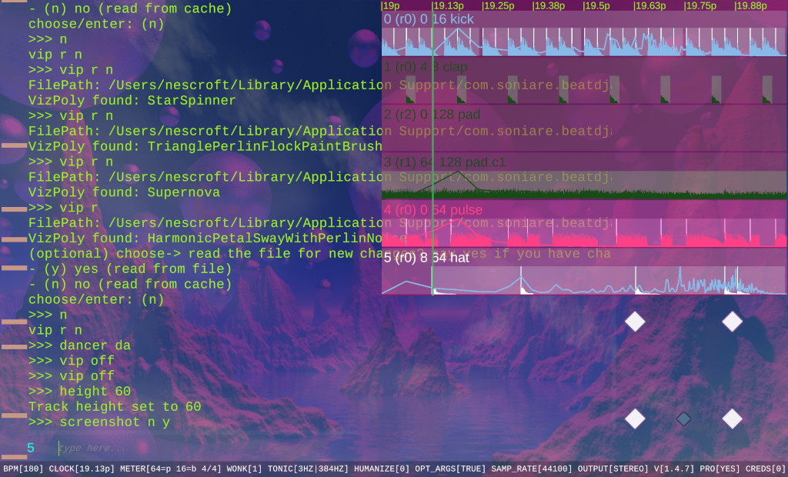

O QUE EU FAÇO
Serviços & Interesses
Fascinada por Interação Criativa:
Atualmente, exploro como o Camera Tracking pode revolucionar a música e o entretenimento, criando programas que transformam movimento em som. Unir lógica e arte é o que me move!
 UI/UX
UI/UX

CAM TRACKING